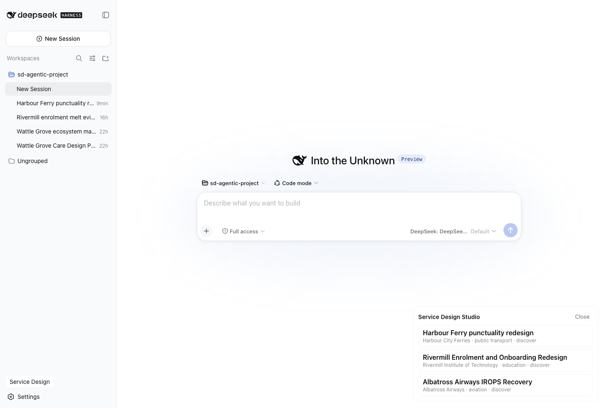

A ten-role agent team, 74 shipped method skills, 38 registered artifact kinds and a 20-book knowledge base — one canonical practice compiled to 12 emitted targets. Pack emission is not the same as verified live host execution; every surface below states its evidence boundary.
Each role owns part of the service design method, each hands artifacts to the next without losing evidence, and the critic attacks every claim before it reaches a client.
The conductor. Owns the engagement lifecycle, phase gates, role dispatch and method selection — translates intent into a plan of record and reports gates back to the human.
The evidence engine. Research plans, interviews, transcript mining, observation. Produces the evidence register the whole team builds on.
The knowledge steward. Method lookups, provenance, template retrieval — keeps every designer working from the same cited canon.
Turns the evidence register into frames: affinity clusters, insight statements, personas, journey v1 — every cluster citing its evidence rows.
The cartographer. Journey maps, service blueprints, mental models, ecosystem maps — typed JSON in, diagrams out, every node evidenced.
The concept engine. HMW framing, ideation, story maps, concept briefs, value propositions — every concept traces its lineage to insights.
Turns concepts into things you can test: prototype plans, storyboards, walkthroughs, test reports. Experiments with hypotheses, not demos.
Value and governance. KPI chains, service quality, standards audits, maturity models — every KPI traces to a business outcome.
The deliverable builder. Executive reports, decks, export bundles — assembled from real artifacts, never invented to fill a slide.
The adversarial conscience. Sits on the write path: no artifact ships without a critic verdict. Defends the truth of the work.
Every method in the practice — from contextual inquiry to service blueprinting — is a prompt plus an output schema plus acceptance criteria plus a review gate. Versioned, tested in CI, reusable across engagements. The artifact catalog lives here →
Every method in the practice cites the book chapters it comes from — TISDD, Kumar, Stickdorn, Kimbell, the Service Profit Chain and more. The librarian keeps the practice honest against the canon.
Provenance for the methods in this practice — cited in every article.
Book 01Provenance for the methods in this practice — cited in every article.
Book 02Provenance for the methods in this practice — cited in every article.
Book 03Provenance for the methods in this practice — cited in every article.
Book 04Provenance for the methods in this practice — cited in every article.
Book 05Provenance for the methods in this practice — cited in every article.
Book 06Provenance for the methods in this practice — cited in every article.
Book 07Provenance for the methods in this practice — cited in every article.
Book 08Provenance for the methods in this practice — cited in every article.
Book 09Provenance for the methods in this practice — cited in every article.
Book 10Provenance for the methods in this practice — cited in every article.
Book 11Provenance for the methods in this practice — cited in every article.
Book 12Provenance for the methods in this practice — cited in every article.
Book 13Provenance for the methods in this practice — cited in every article.
Book 14Provenance for the methods in this practice — cited in every article.
Book 15Provenance for the methods in this practice — cited in every article.
Book 16Provenance for the methods in this practice — cited in every article.
Book 17Provenance for the methods in this practice — cited in every article.
Book 18Provenance for the methods in this practice — cited in every article.
Book 19Provenance for the methods in this practice — cited in every article.
Book 20The canonical tree compiles to every host a modern designer actually works in. The DeepSeek Harness bundle (asd) is the flagship workbench — a plugin that turns the harness app into a service-design studio with typed artifacts, deterministic renderers and a client console.
Antigravity (AGY) instructions and persona.
packCompiled from the canonical tree.
packThe reference pack. Ten agents, 74 skills, templates and the /asd command for Claude Code.
packA standalone CLI runtime for the agent team.
packCodex CLI instructions and research prompts.
packThe @asd/ui DeepSeek Harness plugin — an Agentic SD Studio with a bounded direct capability adapter.
packGrok instructions and persona.
packCompiled from the canonical tree.
packAn MCP server exposing the practice tools to any MCP client.
packNeutral OMP role and skill assets; native loading remains unverified.
packOpenCode agents and skills — the same practice inside opencode.
packPi prompts and persona.
packThe verified release installs @asd/ui@0.5.0 into a DeepSeek Harness 0.1.0-rc.5 profile. The package projects the shared runtime through six host slots and a 24-row direct capability adapter: 23 rows are supported and phase.gate.status is explicit unsupported. The shared CLI/MCP registry remains 30 tools; the Studio projection is deliberately smaller and fail-closed.
Official add, update, remove, stock recovery and reinstall completed in a dedicated profile. The final tarball was portable, path-clean and byte-identical across separate checkout roots.
The installed UI loaded the Studio region, project navigation and bounded capability-adapter surfaces. Fresh tests passed 120 UI cases and 701 workspace cases; ASD-owned serious/critical accessibility violations were zero.
Direct method.run and evidence.query are not exposed by the Studio adapter. Unsupported calls return structured errors; a direct host dispatch without a model-owned parent is rejected.
The receipt proves package/profile/UI smoke and the tested direct surface. It does not by itself prove every chat-driven MCP workflow or arbitrary host-agent dispatch. Read the installation and capability matrix →

Article 37 is the authoritative BUZZ integration walkthrough. It records an authenticated private channel, sd/metrovale-one-recovery, whose first captured roster was the owner plus ten ASD personas (11 members). The owner then added the general claude-code-opus and codex-sol-high identities for advisory support, making 13 members. An owner-reported search for specialised design/slide agents found no match; that observation was not captured as a screenshot and is not a capability claim. Mehran was the sole human approver; no Sam participation is claimed.
A genuine sd-orchestrator — Maya reply, relay-confirmed researcher/mapper handoffs, synthetic EV-MV-001..005 evidence, and a mapper draft are visible in BUZZ. The Canvas is an artifact collaboration index with observed, draft, planned, and gate states — not an MCP database.
The owner requested an eight-slide storyboard from Talia, Claude, and Codex. Article 37 records advisory Claude/Codex replies, but no visible Talia reply and no rendered deck, file, path, URL, or MCP artifact.
The Discover gate stayed BLOCKED. No phase completion, local host execution, MCP persistence, reload/recovery, or cleanup is claimed. ACP remains record-only/fail-closed; BUZZ messages do not prove live spawn or transport.
Use cases carries the concise walkthrough and screenshot captions; Article 37 owns the full case study, ledger, and pending/blocked checklist.
The agents read, mine, draft and criticise. The designer frames the problem, owns the client relationship, makes the calls and carries the ethics.
Reframing the brief and choosing what to study is abductive, political and irreducibly human.
Killing a beloved concept, scoping a pilot, negotiating a gate — decisions with consequences stay with people.
Coercion risk, data dignity, vulnerability, inclusion. No agent signs those off.
The relationship, the room, the workshop with real stakeholders — trust is not delegable.